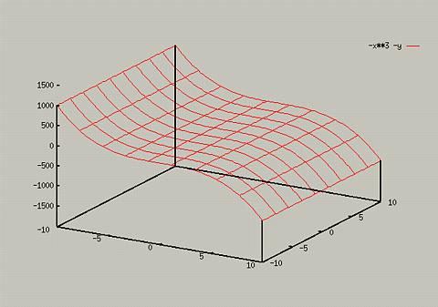

The command used for three-dimensional plots is splot. The
simplest use of it is:
For example, to plot the function z = -x3 -y, you
would type the following:
You should see something like the following:

You can change the scale in a similar manner to plot:
- splot [x1:x2] [y1:y2] [z1:z2] <function>
- splot [x1:x2] <function> (To just set the x range)
- splot [] [y1:y2] <function> (To just set the y range).
- splot [] [] [z1:z2] <function> (To just set the y range).
Or, you can use the following commands to change the default ranges
for subsequent graphs:
- set xrange [x1:x2]
- set yrange [y1:y2]
- set zrange [z1:z2]
To change back to the default x and y ranges, type the following:
- set xrange [-10:10]
- set yrange [-10:10]
It is important to note that if you set the range for the zaxis in one
plot, it will remain at that range for subsequent plots. If you want
to turn GnuPlot's autoscaling back on, type:
For more information on autoscaling, type help autoscale.
Also, if you get an error about an invalid range, you need to change
the ranges you are using.
Subtopics: Hidden 3d views - Increasing Precision of 3D plots -
Adding Contour Lines -
Changing Perspectives
Table of Contents - Previous - 2D plots - Next - Hidden 3D views
College of Natural Sciences /
University of Northern Iowa /
manager@cns.uni.edu
Copyright © 1996 College of Natural Sciences. All Rights Reserved.
Last Modified: 10/29/96